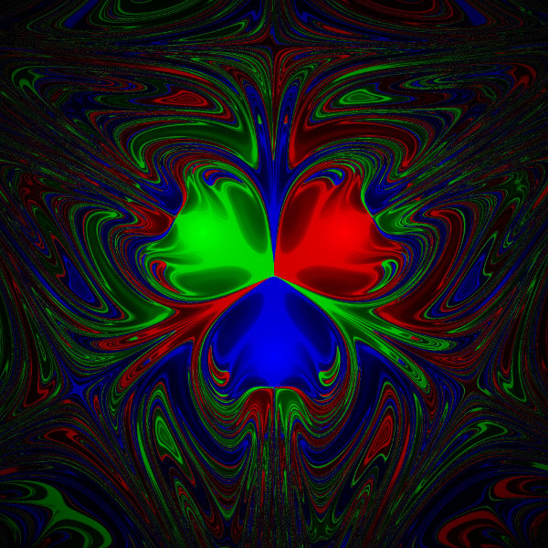

Magnetic Pendulum:
Follow up

We asked the question if given an initial position for the ball, can we predict on which of the magnets the ball is going to end up.
At first, the answer might sound to be ''yes of course''.
Indeed, assume the initial position of the ball is given as coordinates of the plane
and
the ball is relesead from there without a velocity.
The (pair of ordinary differential) equations governing the movement of the metallic ball and the interaction with the magnets and gravity are deterministic equations.
These deterministic equations are the reason why we are able to write a code and make predictions using a computer to run the simulation!
Sensitivity to the initial conditions
We concluded that, in theory, the knowledge of the present, i.e., the initial position of the ball, is enough to predict its future, i.e., its full trajectory.
However, the dynamics are very complicated. The picture below is obtained using the equations governing the motion of the ball. Each pixels describes an initial position that the ball can be left and its color represents which magnet - (R)ed, (G)reen or (B)lue - the ball will end up if left at that precise position.

We understand that the dynamics of the magnetic pendulum can be very sensitive to the initial conditions, which is the so-called "Butterfly effect". In fact, a very small displacement on the initial position of the ball (of order of millimeters!) can change completely its trajectory. This is a fundamental property of chaos.
On the opinion of the person writing these lines, the rigorous ideas behind the "Butterfly Effect" is one of the most deep insights on nature understood in the past century. This was presented in an enlightening article of Edward Lorenz in 1963.
Follow-up
- More about Chaos and Pendulum
- E.N. Lorenz's book written for the wide public Essence of Chaos
- A university-level book on Ordinary Differential Equations Essence of Chaos

Magneettinen heiluri:
Pintaa syvemmälle
Johdantosivulla kysyimme: ''Jos kuulan lähtöpiste on annettu, onko mahdollista ennustaa, minkä magneetin yläpuolelle se hidastuttuaan päätyy?''
Vastaus vaikuttaisi ehkä ensituntumalta olevan ''totta kai on mahdollista''.
Oletetaanpa nimittäin, että kuulan lähtöpiste on annettu tason koordinaatteina
ja kuula päästetään levosta liikkeelle. Yhtälöpari (tarkemmin differentiaaliyhtälöpari), joka määrää kuulan liikkeen magneettisen vuorovaikutuksen ja painovoiman perusteella, on täysin deterministinen. Determinismi tarkoittaa, että tulevaisuus määräytyy täydellisesti systeemin nykytilasta ja on siten periaatteessa ennustettavissa, jos nykytila tunnetaan hyvin. Nimenomaan yhtälöparin ennustettavuuden eli determinismin johdosta voimme kirjoittaa tietokoneohjelman, joka mallintaa kuulan radan annetun alkutilan perusteella.
Alkuarvoherkkyys
Päättelimme, että teoriassa tieto nykyisyydestä eli kuulan lähtöpisteestä riittää tulevaisuuden eli kuulan radan ennustamiseen. Käytännössä tällaisessä järjestelmässä eri voimien kokonaisvakutus kuulan liikkeeseen on kuitenkin erittäin monimutkaista. Tämä johtuu etupäässä siitä, että kuula kokee jokaisella hetkellä kolmen magneetin koko ajan muuttuvan yhteisvaikutuksen. Alla oleva kuva on saatu käyttäen kuulan liikettä kuvaavaa yhtälöparia. Jokainen kuvapiste eli pikseli edustaa erästä mahdollista lähtöpistettä kuulalle. Pikseli on väritetty sen mukaan, minkä magneetin läheisyyteen kuula päätyisi päästettäessä liikkeelle tarkalleen kyseisestä pisteestä.
Kuvasta ymmärrämme, että magneettinen heiluri on erittäin herkkä alkuarvoille. Tätä ominaisuutta kutsutaan joskus ''perhosvaikutukseksi''. Nimi tulee Edward Lorenzin tokaisusta: ''Perhosen siivenisku Brasiliassa voi aiheuttaa pyörremyrskyn Yhdysvalloissa''. Lause kuvaa säätilan alkuarvoherkkyyttä. Magneettinen heiluri on samalla tavoin herkkä alkuarvoille: vain millimetrin muutos kuulan lähtöpisteessä voi muuttaa täysin sen radan! Alkuarvoherkkyys on kaaoksen perustavanlaatuinen ominaisuus.
Me tämän kirjoittajat pidämme perhosvaikutusta ja sen täsmällistä matemaattista teoriaa yhtenä syvällisimmistä luonnon piirteistä, jonka ihmiskunta on ymmärtänyt viimeisen vuosisadan aikana. Perhosvaikutuksen teorian on hyvin valaisevalla tavalla esittänyt sen tärkeimpiin kehittäjiin kuuluva Edward Lorenz tässä artikkelissa vuodelta 1963.
Aiheesta muualla
- More about Chaos and Pendulum
- E.N. Lorenz's book written for the wide public Essence of Chaos
- A university-level book on Ordinary Differential Equations Essence of Chaos